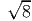

MATP6640/ISYE6770 Linear Programming, Homework 6.
Due: 11.59pm on Monday, April 27, 2020 via LMS.
10% penalty for each day late.
with � ∈ ℝm×n of rank m, g ∈ ℝm, and other terms are dimensioned appropriately. Assume x0 = 1, x = e is feasible and assume ν := gT (��T )-1g ≤ 1. Let A := [g,�] ∈ ℝm×(1+n). Show that moving in the affine direction -PAc gives a point on the optimal face for an appropriate step length, where c = (1, 0,…, 0)T ∈ ℝ1+n. (Hint: You may find the Sherman-Morrison-Woodbury formula helpful:
for symmetric positive definite matrices M.)
The primal and dual semidefinite programs are
with m = 2. Show that (P) has an optimal value of (3 -). Show (D) is strictly feasible. What do you conclude about the optimal dual value, and the relationship of the optimal dual slack matrix S to the optimal primal matrix X? Use complementary slackness to solve the dual problem.
Handouts: Please send me a copy of your slides by midnight on Tuesday, May 5. I will upload them to LMS before the presentations.
Reports: Your writeup is due by midnight on Tuesday May 5, as an emailed pdf file. It should describe the problem you worked on, what you did to solve the problem, and the significance of what you did. You should also cite relevant references and state what was novel about your approach.
For group projects, each group member should email me a description of his or her individual contribution. (Plain text or pdf is fine.)
| John Mitchell |
| Amos Eaton 325 |
| x6915. |
| mitchj at rpi dot edu |
| Office hours: Monday: 2–4pm, Wednesday: 11am–1pm, on WebEx Meetings |